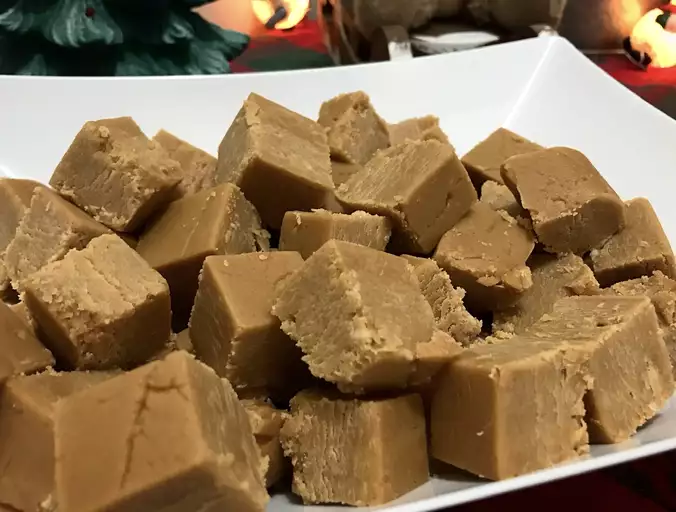

Peanut Butter Fudge

Description
The easiest and best peanut butter fudge recipe that you'll ever use
Ingredients
- ½ cup butter
- 1 (16 ounce) package brown sugar
- ½ cup milk
- ¾ cup peanut butter
- 1 teaspoon vanilla extract
- 3 ½ cups confectioners' sugar
Steps
- Melt butter in a medium saucepan over medium heat; stir in brown sugar and milk. Bring to a boil and boil for 2 minutes, stirring frequently; remove from heat and stir in peanut butter and vanilla.
- Place confectioners' sugar in a large mixing bowl. Pour in peanut butter mixture and beat with an electric mixer until smooth; pour into an 8x8-inch dish. Chill until firm before slicing, about 1 hour.